Best restaurants & food outlets in all the major cities.

 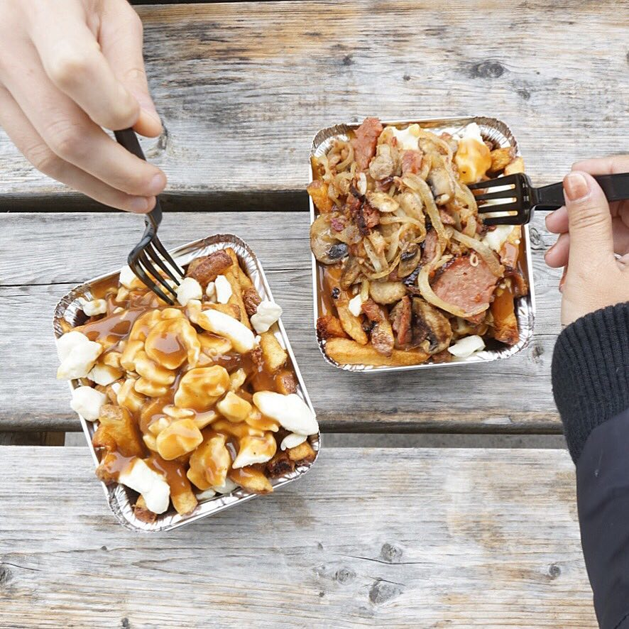
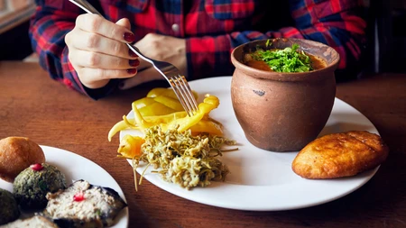
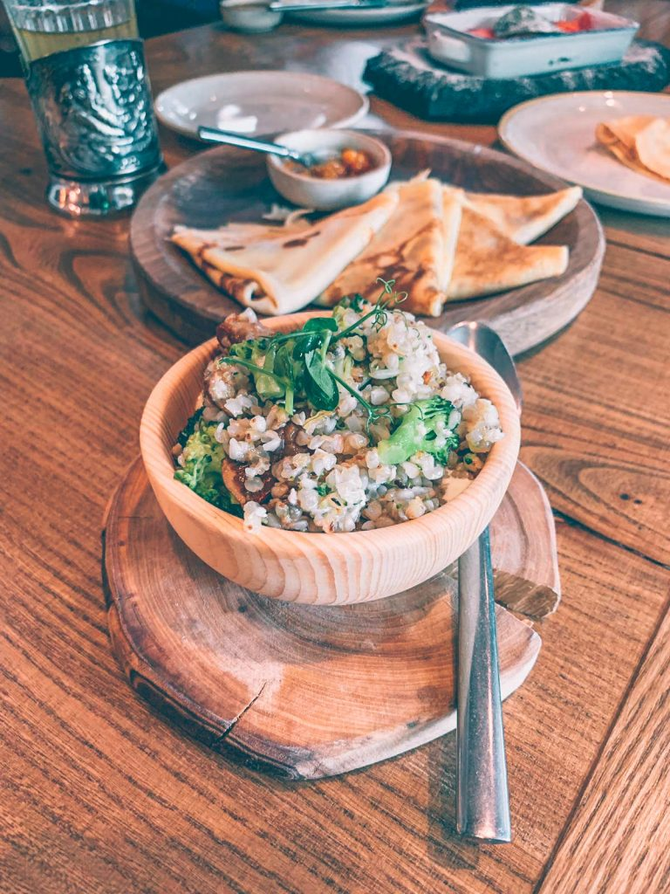
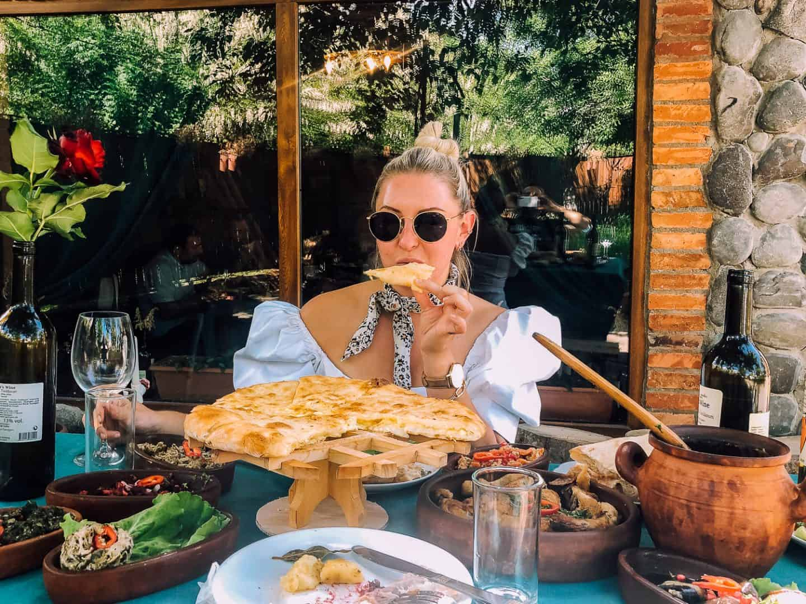
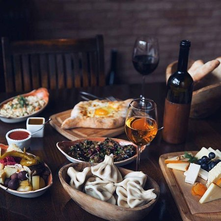
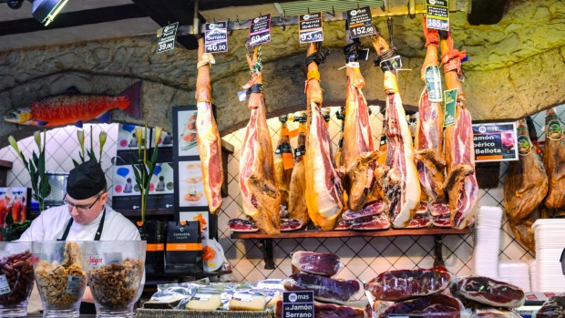
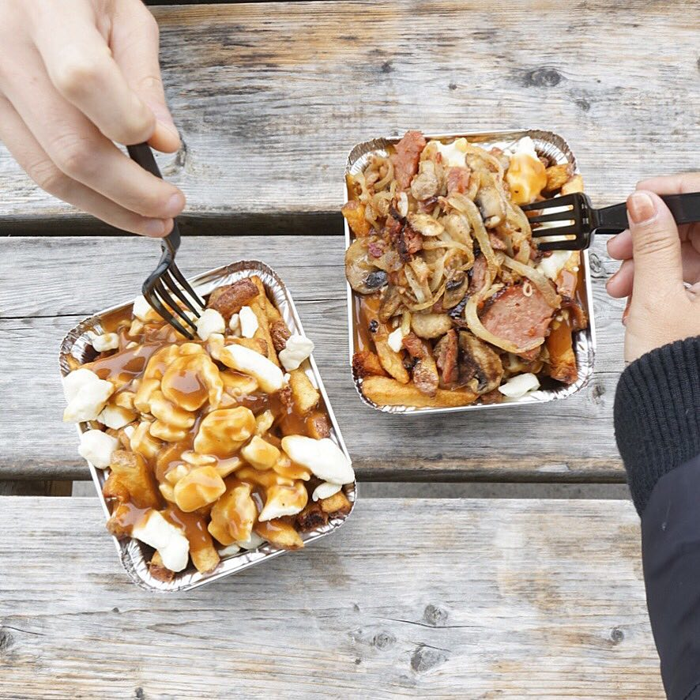
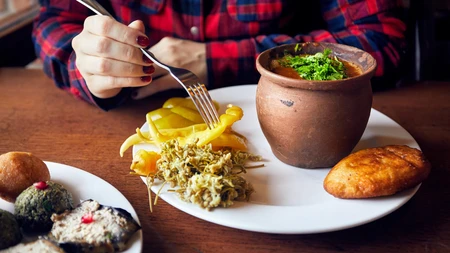
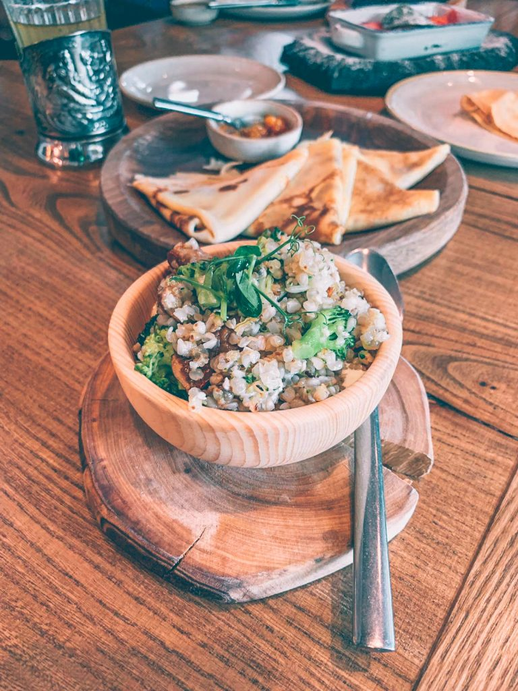
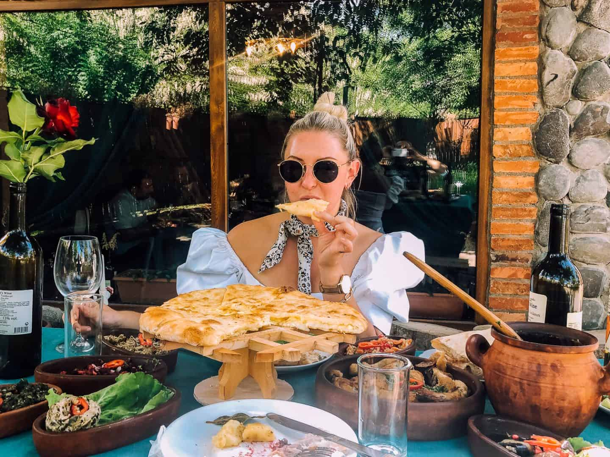
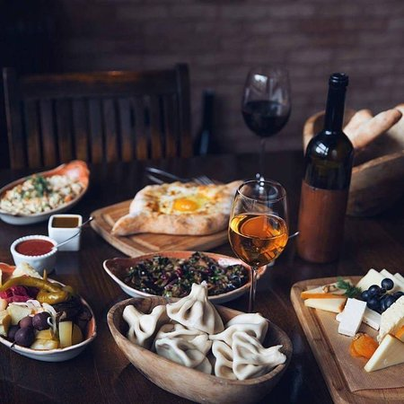
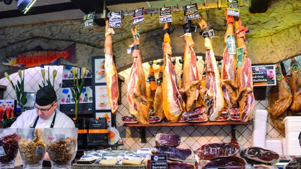

A popular garnish for this dish is Daikon radish. The type of fish in it defines a sushi's taste. However, the vinegared rice gives the dish a tangy taste overall. Tuna, eel, and Salmon tend to have a light flavour while octopus flavoured sushi is generally strong in taste.

The dish is then stewed for a few hours which gives it a tender texture and exotic taste. The blast of flavours is surely one of the reasons why the dish is loved globally and is also one of the best dishes in the world. Easy to rustle up, this dish is often served at ceremonies or to honour guests.

Ramen is a Japanese dish made of wheat noodles and served in the broth along with vegetables and meat. Ramen comes in several flavours, from tangy to spicy, depending on the flavour of the broth. Every region in Japan has it's own. Tonkotsu, a popular style of ramen includes pork bone broth and the miso ramen, another popular dish originated in Hokkaido.
A type of sour and hot Thai soup, Tom yam goong is prepared with shrimp along with a load of healthy herbs and spices? lemongrass, lime, kaffir leaves, galangal, and red chili peppers to name a few. the soup plays around with a bit of all possible flavours? spicy, sour, salty and sweet.

A dish popular across the Middle East, Kebabs are originally from Turkey. They consist of ground meat or seafood, fruits, and vegetables in some cases and are cooked on a skewer with a big fire underneath, just like a barbeque on the grill.

A simple yet an incredible dish, Pho (pronounced as 'fuh') is a Vietnamese dish made of rice noodles and meat (usually beef or chicken) served in broth and topped with herbs. The dish has got a great fragrance which lingers in the eater's head for a while.